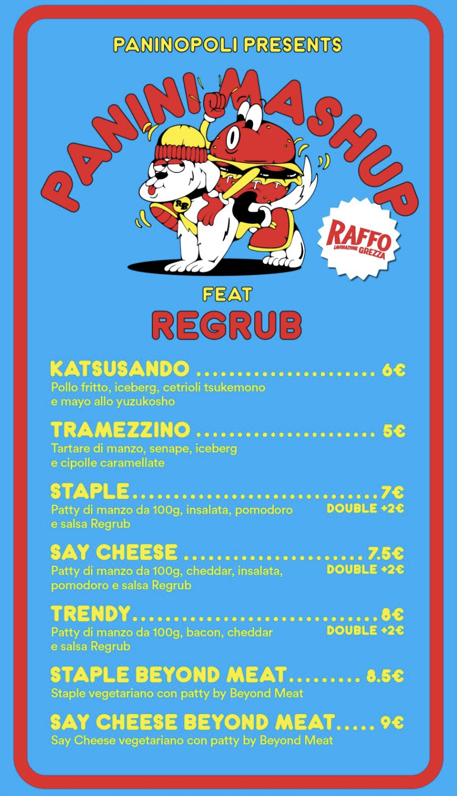
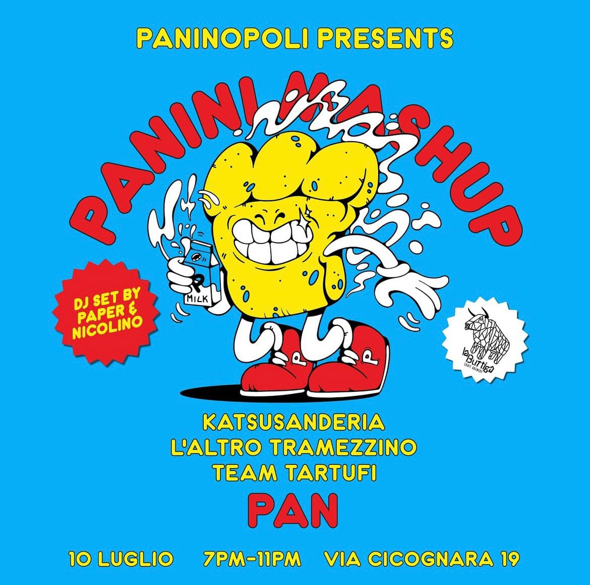
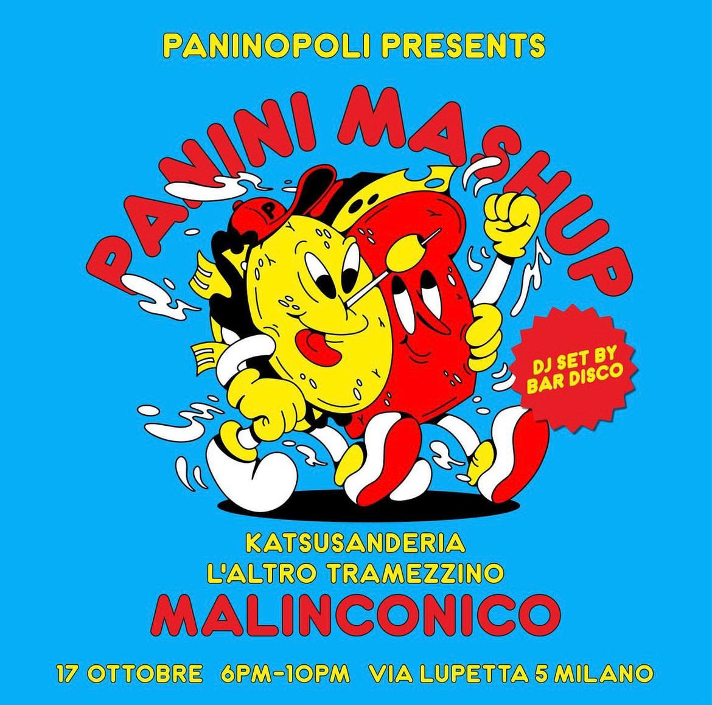
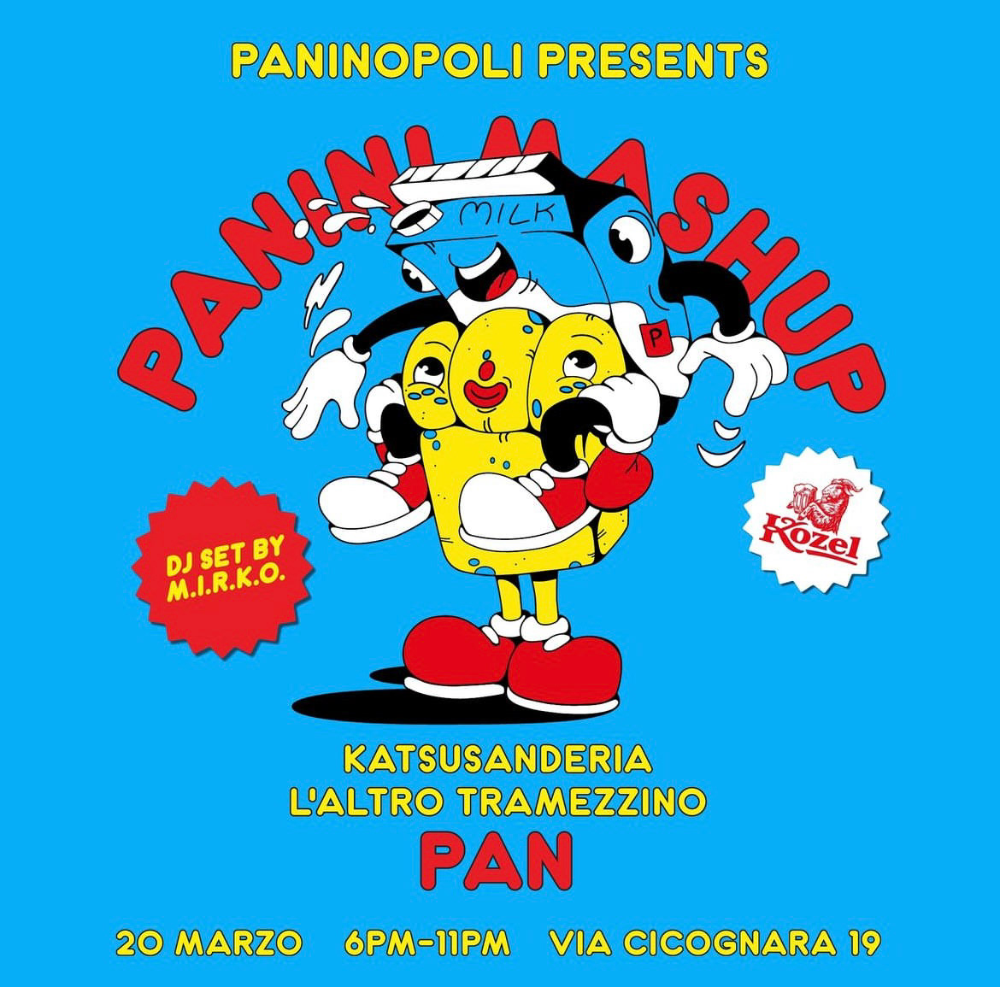
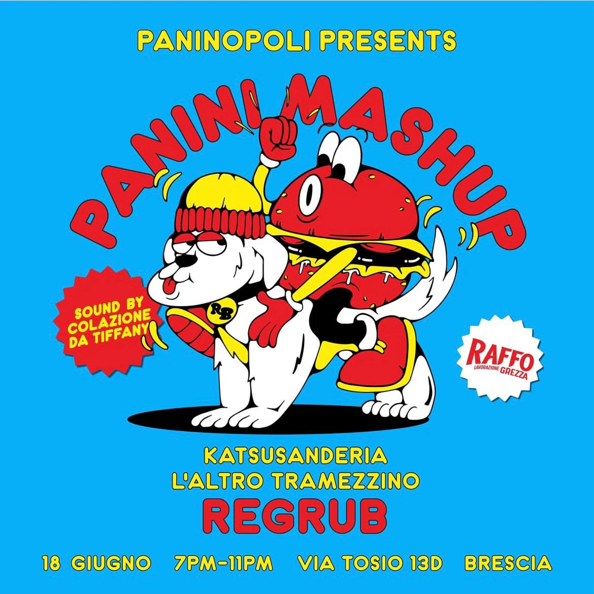
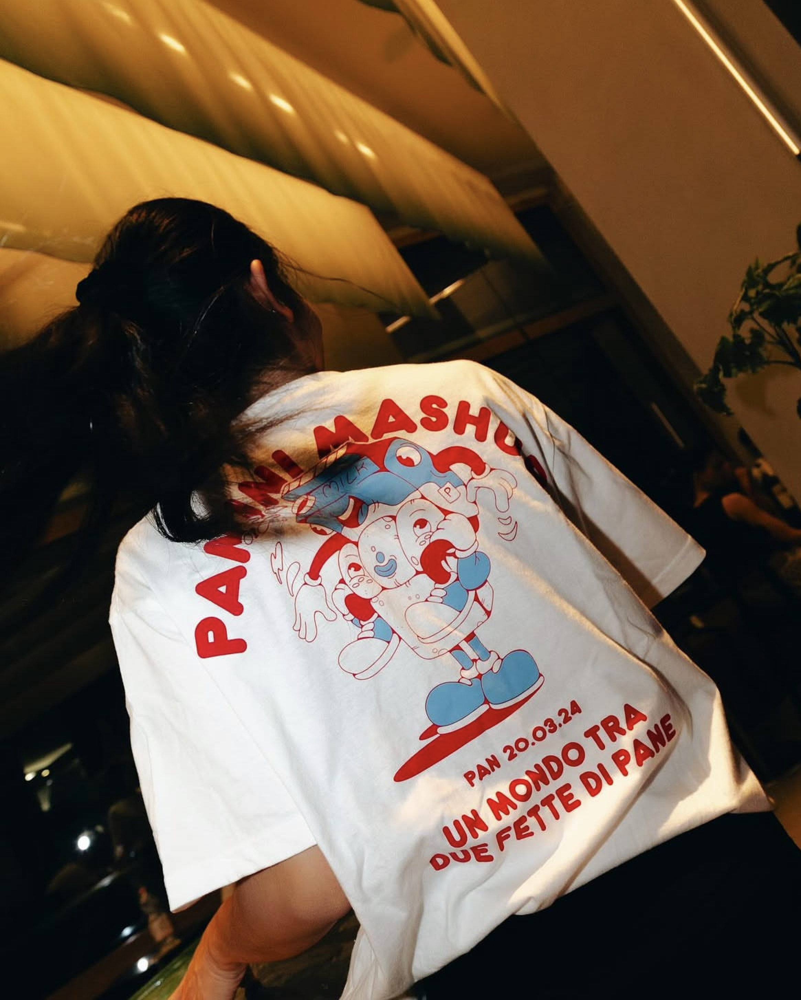
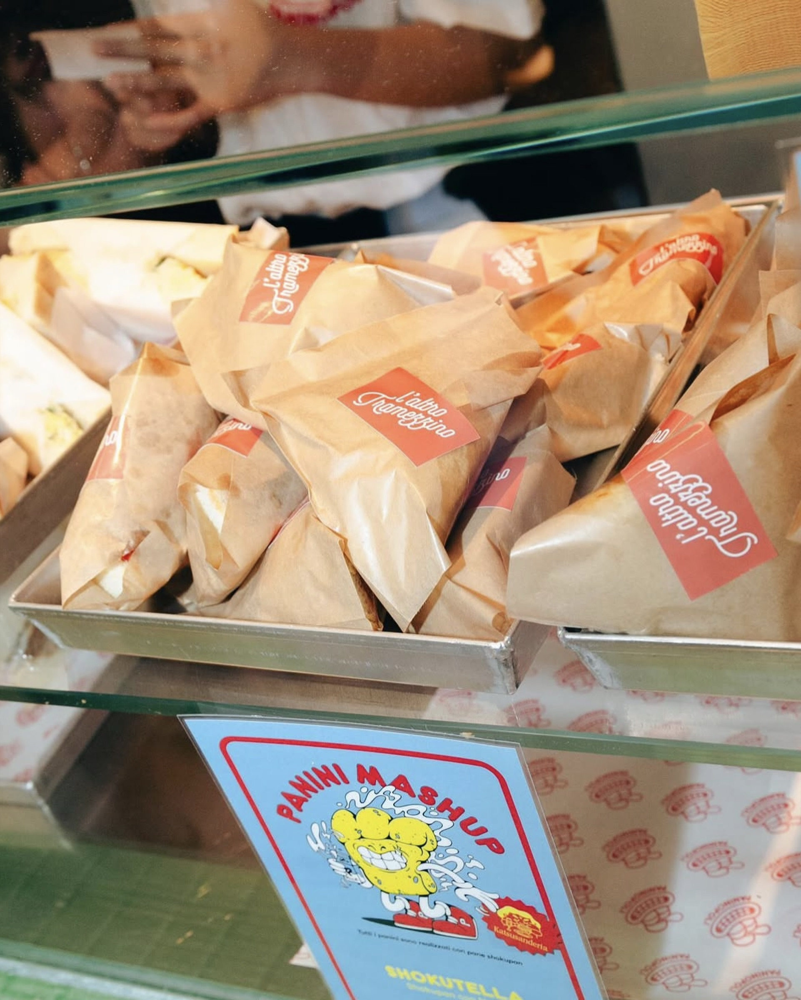
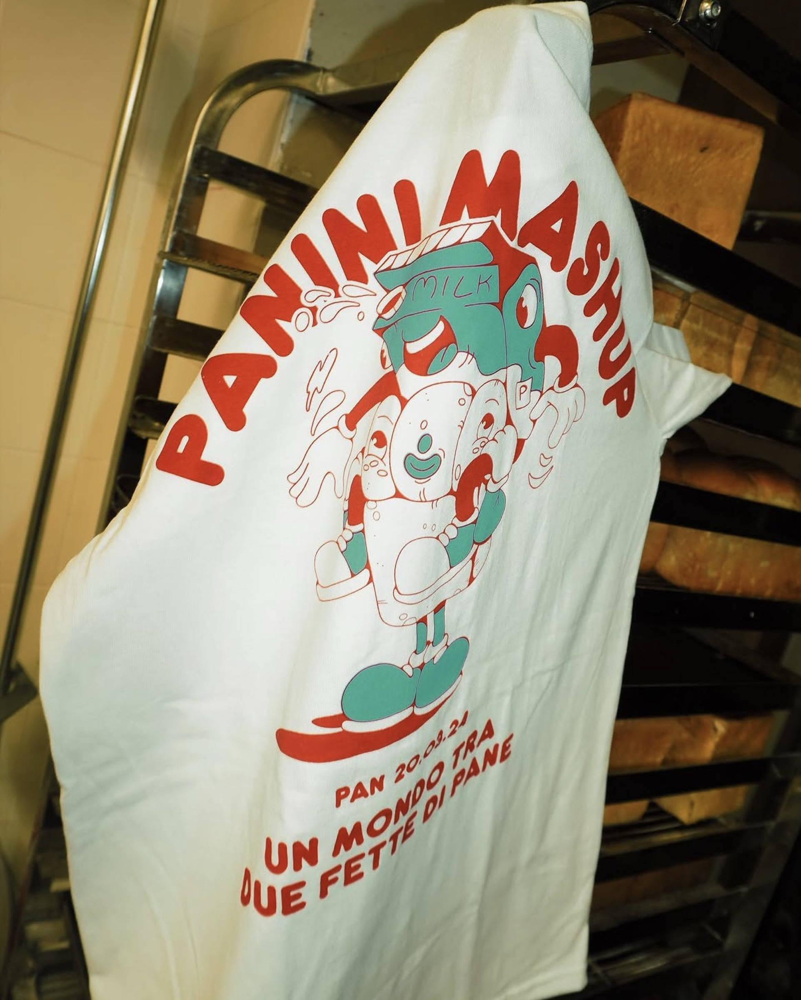

Paninopoli Panini Mashup
Paninopoli è il collettivo nato dall'unione tra Burro Studio, L'Altro Tramezzino e Katsusanderia: gente affamata con la fissa dei panini, convinta che due semplici fette di pane possano contenere un mondo di gusti, formati, storie e persone.
Da questa fissazione nasce Panini Mashup, la serie di serate itineranti tra Milano e Brescia in cui due o più "panini" si sfidano a colpi di gusto.
Per ogni tappa ho disegnato un personaggio ibrido — un vero e proprio mashup tra i protagonisti della serata — diventato il volto di locandine, stories e merchandising dell'evento.

Personaggi nuovi
ad ogni serata
Ogni locandina porta in scena i personaggi legati ai panini protagonisti della serata, selezionati in base al menu: stesso lettering gommoso, stessa palette accesa e una composizione illustrata diversa per ogni tappa del tour.





Dal banco
al backstage



Le stories
Un assaggio di come Paninopoli racconta ogni tappa sui social: dall'annuncio dell'evento al merch indossato dalle persone che ci hanno partecipato.
Ti piacerebbe un festival così?
Identità illustrata, locandine e social kit per eventi che si ricordano.
Scrivimi per costruire insieme il prossimo mashup.